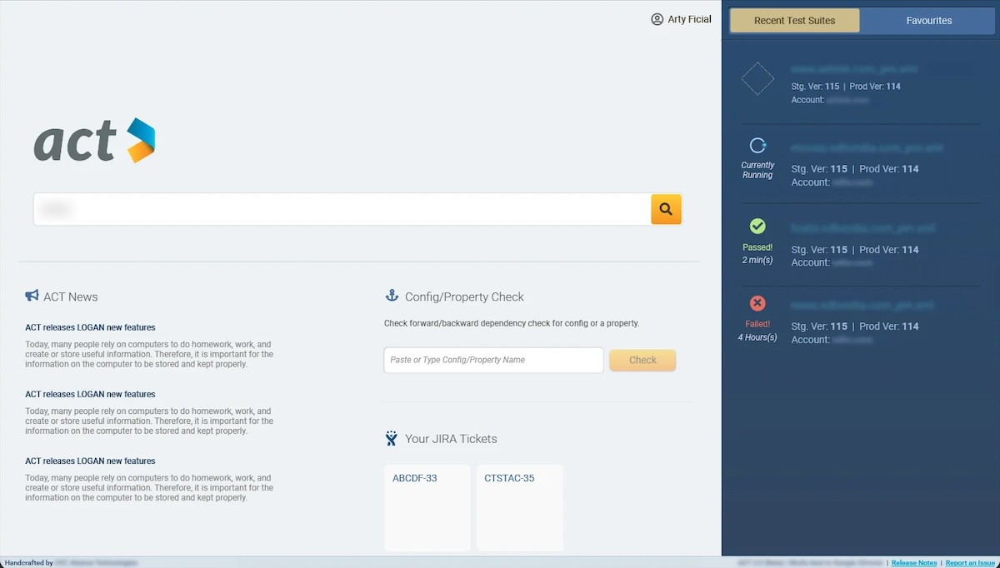
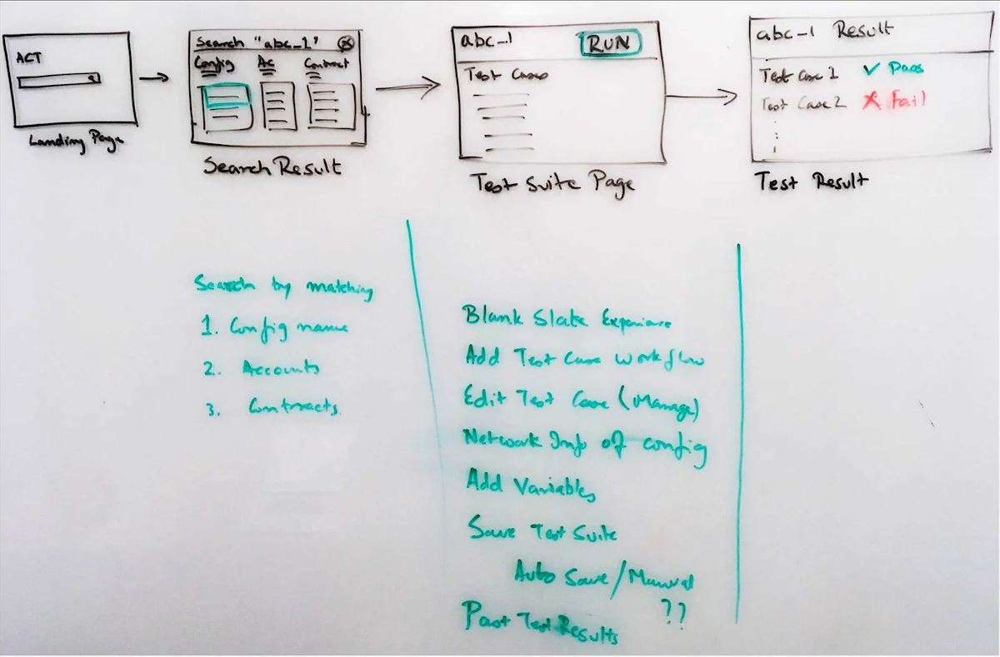
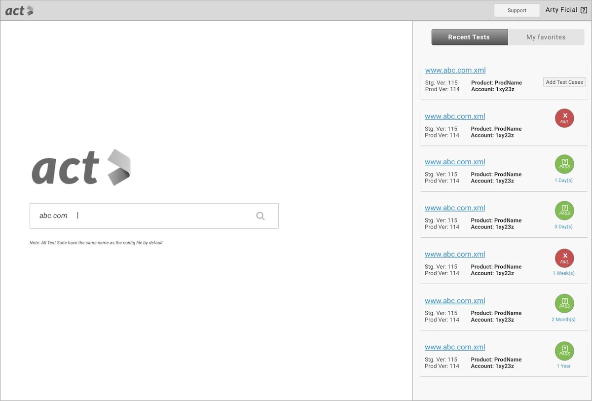
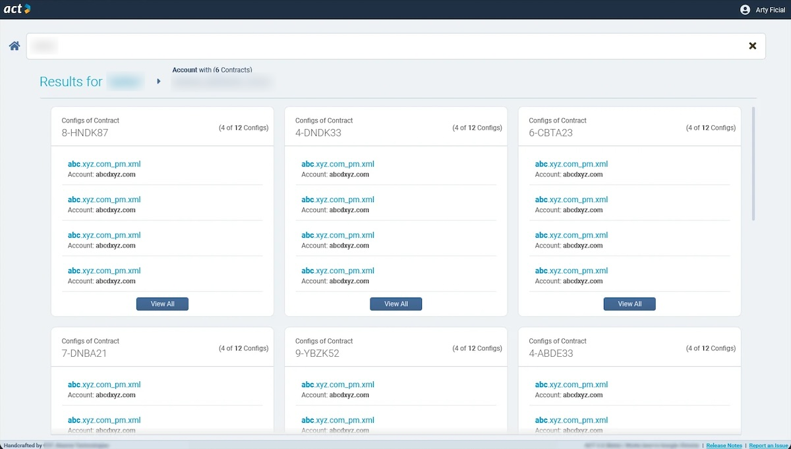
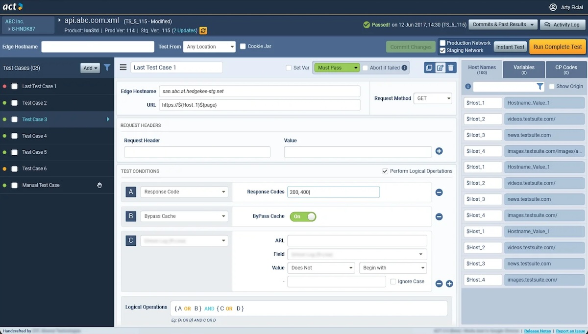
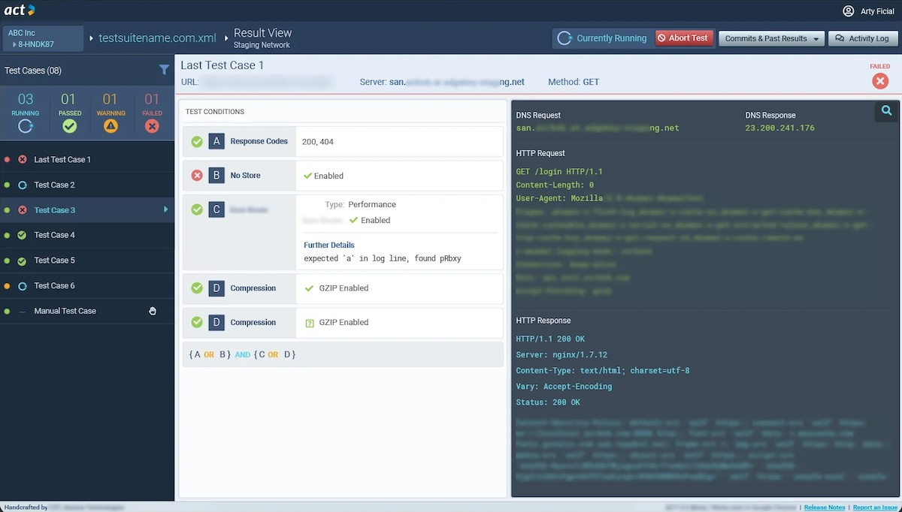
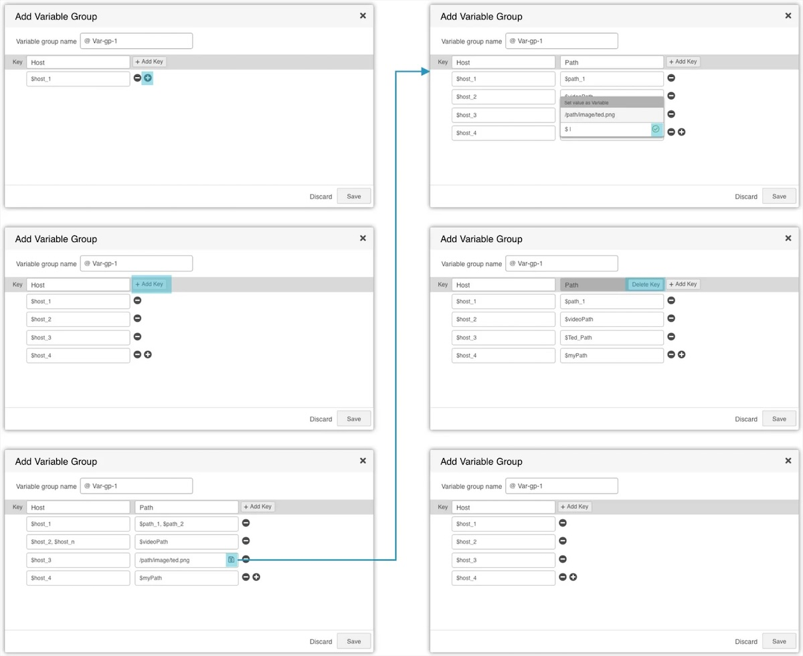

Regression Web Testing
Akamai Technologies[Replace: years]
Engineers test configuration changes on staging before they reach production.

At a glance
- ProductACT, an internal web app for regression testing configuration changes
- UsersSolutions Engineers, expert users who test changes to customers’ configurations
- My role[Replace: your title, and what you led]
- Team[Replace: who you worked with]
- ResearchQuestionnaire and feature-ranking survey with 37 prospective users
- Visual designA new theme for a standalone app, specced for engineers in InVision
- Outcome[Replace: one line on what shipped and when]
The problem
An untested configuration change could slow a customer’s website, or take it down.
Customers have thousands of configuration files between them. Before a change reaches the production network, Solutions Engineers test it on staging. The tool they had made that hard.
- Test casesFinding and managing the test cases for a configuration was very difficult.
- VariablesSingle and grouped variables were hard to manage and use correctly.
- VersionsTest suites could not be versioned.
- ReportsWeak test reports led to customer incidents.
Engineers knew the old tool well. The new one had to do much more without a steep learning curve, and bring their test cases across without loss.
My role
[Replace: one line on your role and who you worked with]
[Replace: two or three calls that were mine, not the team’s]
Research
We started from the product owners’ spec, then asked the people who would use the tool.
Brainstorming sessions with product owners and closed user groups set the goals and pain points. A questionnaire asked prospective users what was wrong with the existing tool, and how they expected its information to be organised.
The list of wanted features was long. So 37 prospective users, nominated by the product owners and the user groups, ranked each one on a scale from must-have to not necessary.
[Replace: the features that ranked highest, and one finding that changed the design]

Structure first
Before the screens, I mapped how the app’s information fits together.
Closed user groups and subject-matter experts checked that the structure matched how they think about the work. The database team checked it could be built from the data sources they had.
App structure
Accounts, contracts and configurations follow the structure engineers already knew from other systems in the company, such as Salesforce. Every configuration has its own test suite. A global template set holds test cases for each product feature, so ACT can suggest test cases for a configuration.
Basic workflow
Find a configuration, manage its test cases, run a test every time the configuration changes, then read the results.
Key views
The workflow set four key views. Each was wireframed and reviewed with stakeholders before the visual design.
Landing
A search bar, recently run test suites with their status, and favourites.

Search results
Configurations matched by name, account or contract and grouped by contract, with filters, drill-downs and breadcrumbs.

Test suite
The workspace where engineers spend most of their time, writing test cases and their conditions. Reviews with stakeholders ranked the information into primary, secondary and tertiary levels, and the layout follows that order.

Test result
The same structure as the test suite, with logs and a pass or fail for each condition, so engineers can trace a failure to its cause.

Grouped variables
Test cases in a suite reuse values, so engineers can save them as variables.
Some values belong together, such as hostnames and their paths. A grouped variable holds them as a table: a key, then any number of values. A test case that uses a grouped variable runs once for each value in it.
Adding many keys and values to a two-dimensional structure had to stay easy. The wireframes walk through adding hosts, adding a path key, setting a value as a variable, and deleting a key.

The trade-off
[Replace: one call where business or engineering needs won over a UX principle]
[Replace: what it cost users, and how I flagged the caveat]
Outcome
- Shipped[Replace: what shipped and when]
- Validated[Replace: how the design was tested with engineers]
- Judged by[Replace: how success was judged]
Looking back
[Replace: what I’d do differently now]
The full story
There is more to it than one page. I’m glad to walk you through the whole process on a call.
- Emailchetanshridhar@gmail.com
- More workSelected work